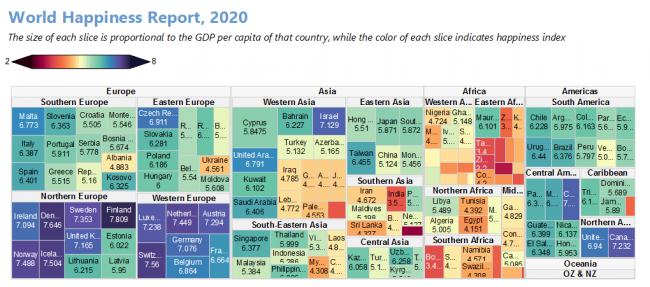

Wählen Sie mehrere kategoriale Spalten und eine Wertespalte aus, um eine Treemap zu erstellen. Es stellt die Struktur der hierarchischen Daten dar.
Wählen Sie Zeichnen > Kategorial: Treemap im Hauptmenü.
treemap.otpu (installiert im Origin-Programmordner).
Treemaps zeigen hierarchische (baum-strukturierte) Daten als Satz geschachtelter Rechtecke. Jedem Zweig des Baums wird ein Rechteck gegeben, das dann mit kleineren Rechecken gekachelt wird, die Unterzweige darstellen. Das Rechteck eines Blattknotens besitzt eine Fläche, die proportional zu einer festgelegten Dimension der Daten ist.
Für diese Art von Diagramm können Sie die Rechtecke immer noch benutzerdefiniert anpassen, z. B. die Anordnung der Rechtecke, das Füllmuster der Rechtecke, die Beschriftungen der Rechtecke und den Abstand zwischen den Rechtecken:
Das Diagramm ist standardmäßig auf Fensteransicht gesetzt. Wenn Sie die Fenstergröße also durch Ziehen ändern, wird auch der verfügbare Raum des Treemap-Layout verändert. Das bedeutet, dass das Layout sich entsprechend der Fenstergröße ändert. Wenn Sie das Diagramm exportieren möchten, wird die Dimension automatisch aktualisiert und das Diagramm wird basierend auf der aktuellen Fenstergröße exportiert.